בקנבס מלא, במדידה הסופית
לכל שלב צילום לאורך ולרוחב
ב־p95 זמן פריים וב־p95 עלות JS
מדידה באותם תנאים
לפני ואחרי
הטבלה קוראת ישירות את קובצי התוצאות. בכל תא: לפני ← אחרי. זמן במילישניות; ערך נמוך עדיף. ״פריים ראשון״ הוא עלות JavaScript של הפריים הראשון במרוץ; ״p95 זמן פריים״ הוא המרווח שנמדד בין פריימים, וכולל את התנהגות רינדור התוכנה.
| כיוון ומצב מדידה | JS בפריים ראשון · ms | p95 זמן פריים · ms | p95 JS · ms | קריאות ציור בסיום | טעינה עד מוכנות · ms | דגימות לאחר חימום |
|---|---|---|---|---|---|---|
| 844×390קנבס מלא · פרופיל טלפון | 9.2 → 7.9 | 816.7 → 383.4 | 6.9 → 5.6 | 136 → 55 | 3,914 → 3,341 | 48 → 94 |
| 844×390קנבס קטן 220×160 · בידוד עלות JS | 15.2 → 5.8 | 383.4 → 166.8 | 5.9 → 3.1 | 164 → 111 | 3,254 → 2,473 | 109 → 204 |
| 390×844קנבס מלא · פרופיל טלפון | 9.8 → 4.4 | 600 → 266.7 | 5.7 → 4.1 | 114 → 111 | 3,706 → 2,562 | 66 → 146 |
| 390×844קנבס קטן 220×160 · בידוד עלות JS | 9.4 → 4 | 366.7 → 166.8 | 5.1 → 3.1 | 129 → 113 | 3,352 → 2,317 | 115 → 209 |
תקציב משולשים
בכל תא: משולשי צבע + משולשים במעבר הצל. איכות גבוהה נלקחת מ־auditHigh ואיכות חסכונית מ־audit שבסיום. מוני renderer.render.triangles כבר כוללים את המעברים שנציירו; לכן אין להוסיף להם שוב את מספר משולשי הצל.
| כיוון וקנבס | גבוהה לפני · צבע + צל | גבוהה אחרי · צבע + צל | חסכונית לפני · צבע + צל | חסכונית אחרי · צבע + צל |
|---|---|---|---|---|
| 844×390קנבס מלא | 641,002 + 209,634 | 101,320 + 9,678 | 199,860 + 21,080 | 76,057 + 2,028 |
| 844×390קנבס קטן | 625,188 + 178,494 | 100,208 + 6,939 | 206,748 + 22,520 | 78,609 + 2,248 |
| 390×844קנבס מלא | 618,936 + 199,094 | 101,028 + 6,642 | 188,582 + 10,920 | 78,103 + 2,028 |
| 390×844קנבס קטן | 619,650 + 178,494 | 100,208 + 6,843 | 190,390 + 11,724 | 78,689 + 2,248 |
שיטת המדידה: כלי המאגר tools/perf-alpine.html, אותו Chrome עם SwiftShader, תצורת מכשיר בדפדפן DPR 2, שני כיווני טלפון, קנבס מלא וקנבס קטן והחלפת איכות באמצע. משכי הריצות שנבחרו, לפי התוצאות: 30–30.3 שניות — ריצות ארוכות שתוכננו לכ־30 שניות. הרזולוציה בפועל של מנוע התצוגה משתנה לפי preset ונרשמת ב־JSON. אחרי חימום של שתי שניות נאספות דגימות; רינדור התוכנה הכבד משאיר מעט דגימות בחלק מהריצות, והכמות מופיעה בטבלה. אלה מדידות דפדפן מקומי, ואין להסיק מהן FPS או זמן GPU בטלפון אמיתי.
תוצאת המדידה: בכל ארבעת המצבים שנמדדו, העלות בפריים הראשון, p95 זמן הפריים ו־p95 עלות JS לא גדלו מול קו הבסיס המתאים. זו תוצאה במדידת רינדור תוכנה מקומית, ולא התחייבות לביצועי טלפון.
תקלה שנמצאה ותוקנה: במדידת הביניים, לפני השלמת החימום, הפריים הראשון הגיע ל־136.7 ms — כ־137ms, מעל הדרישה. החימום הורחב לדמות ולאביזרים לפני תחילת המרוץ, ונערכה מדידה חוזרת. המדידה הסופית בקנבס מלא היא 844×390: 7.9 ms ו־390×844: 4.4 ms. קובץ הביניים נשמר כדי שהפער יהיה גלוי.
מדידות 12 השניות היו קצרות ורגישות לתנודות תזמון. בסבבים נוספים נרשמו גם קפיצות בעלות engine.step, שהקוד שלו לא שונה. לכן ההשוואה הורחבה לריצות של כ־30 שניות לכל ארבעת המצבים, לפני ואחרי ובאותו Chrome, ברצף. הטבלה משתמשת בשתי הריצות הארוכות השלמות ואינה בוחרת מצב מוצלח מסבב אחר. כל המדידות המוקדמות נשמרו לאבחון.
קו הבסיס שנבחר · JSON מלאהמדידה הסופית שנבחרה · JSON מלאהשוואה מרוכזת · JSON
כל סבבי המדידה, כולל ניסיונות הביניים
before.jsonafter.jsonafter-warm.jsonafter-final.jsonbefore-long.jsonafter-long.json
דמות GLB · 12 קליפים
דמות ותנועה
skier.glb נטען עם מפענח Draco מקומי. מכונת מצבים מפעילה 12 קליפים דרך התאמת שלד; התנועות הוכנו מראש בזמן טעינה, עם מיזוג בזמן המשחק. הדמות: 1,920 משולשים ו־20 עצמות. אין כאן הבטחה לנעילת כפות רגליים מושלמת בכל תנאי.

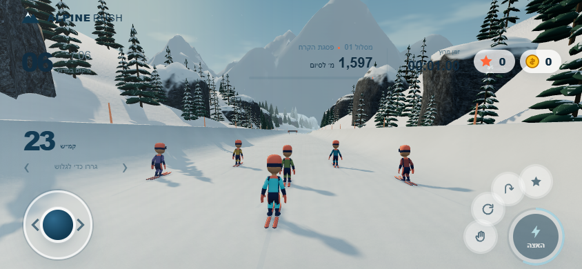

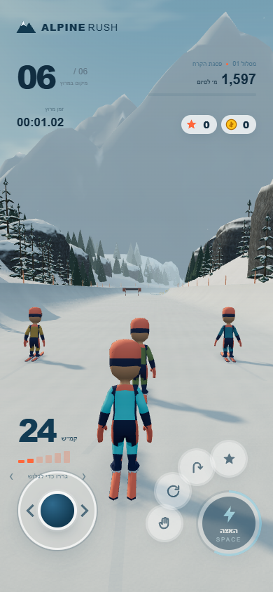
שגיאות דף שנרשמו: 0 · נתוני QA לשני הכיוונים[false,false]
7 מודלים · מרקמים מוכנים
מדרון וסביבה
המשטח מהמודל המוכן הותאם למערכת הקואורדינטות ולחתך ה־halfpipe הקיים. שלוש גרסאות עצים, סלעים, גדר ושער הוחלפו בנכסי design/models; שלג ורקע הרים מגיעים מ־design/environment. מופעי העצמים מאוגדים, טווחי הציור ופס הצל נשמרים. הפיזיקה וההתנגשויות לא שונו.

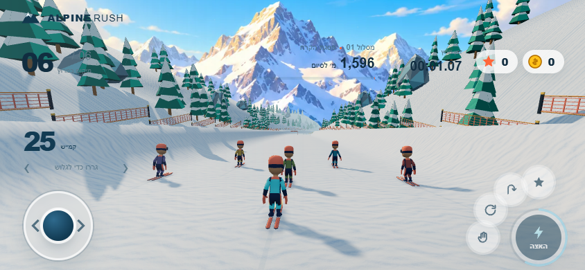

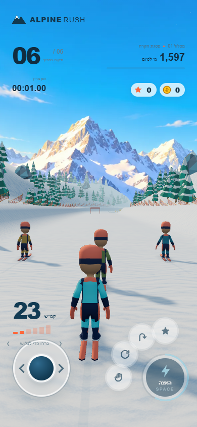
שגיאות דף שנרשמו: 0 · נתוני QA לשני הכיוונים[false,false]
עד 3 מופעים · 3 MiB
אפקטים ומצלמת נפילה
אבק שלג, קרצוף, נחיתה וקווי מהירות מחוברים לאירועי התצוגה. התקרה היא שלושה מלבנים פעילים: שישה משולשים ועד 3 MiB של אטלסים תושבים. מסלול ski-fall כולל כניסה ויציאה חלקות; השעון נעצר בהשהיה והתנועה מצטמצמת לפי העדפת המשתמש.

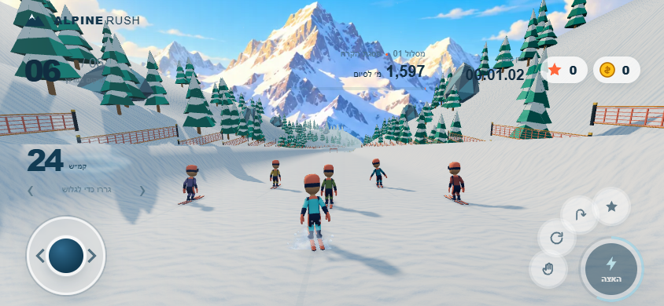

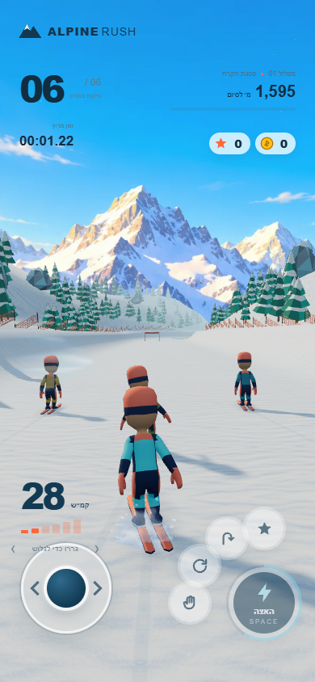
שגיאות דף שנרשמו: 0 · נתוני QA לשני הכיוונים[false,false]
12 דגימות · 3 אירועים + רקע
קול לפי המיקס
נטענות 12 דגימות סקי וסצנות. הקרצוף נבחר לפי המהירות, הרוח מנוגנת כקטע חד־פעמי והרקע משתמש בלולאה המלאה שסופקה. עוצמות, מסננים, הנמכת רקע, mute והשהיה מנוהלים לפי mix.json. הניגון מתחיל רק בעקבות פעולה של השחקן.

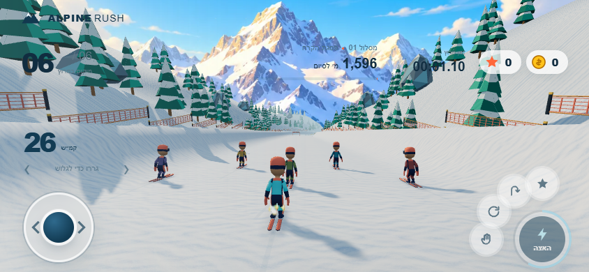

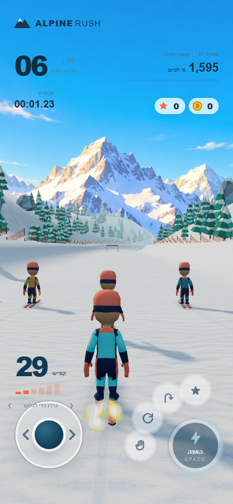
שגיאות דף שנרשמו: 0 · נתוני QA לשני הכיוונים[false,false]
RTL · שני כיווני טלפון
מסך פתיחה
איור הפתיחה מגיע מ־design/screens/intro/alpine.svg. העברית נשארת ב־HTML בכיוון RTL והשם ALPINE RUSH בכיוון LTR; האיור נשמר ללא מתיחה. הפתיחה נבדקה לאורך ולרוחב, עם מידע ופעולות הנגישים בטלפון.

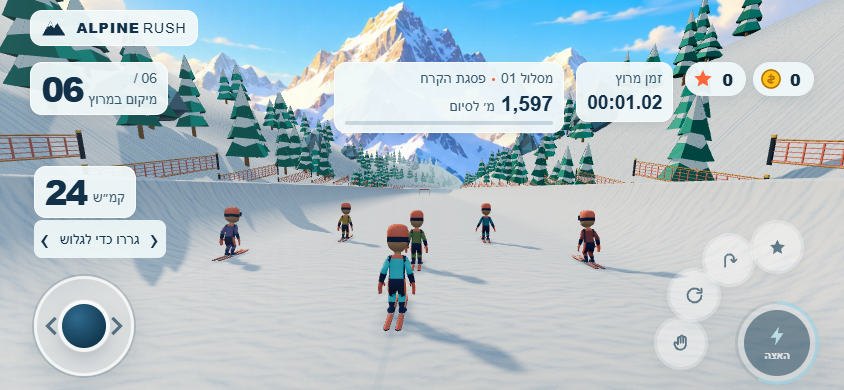

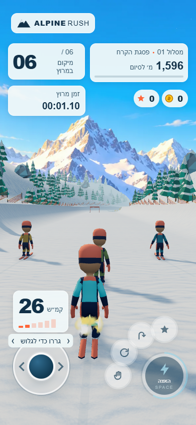
מסך הפתיחה בשני הכיוונים

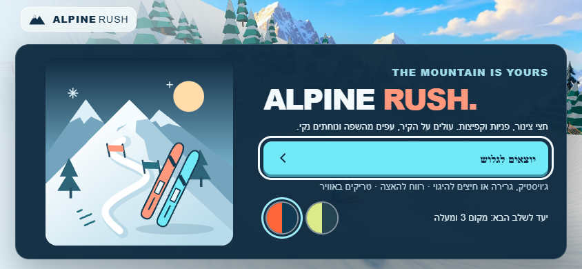

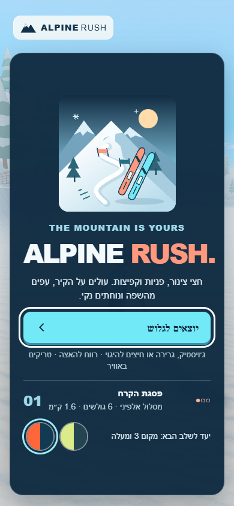
שגיאות דף שנרשמו: 0 · נתוני QA לשני הכיוונים[false,false]
אימות ומגבלות
מה נבדק, ומה עוד נדרש
התאמת משטח השלג: בדיקה עצמאית דגמה 126 נקודות במקטע המותאם. השגיאה הגדולה שנמדדה בין המשטח המצויר לחתך הפיזיקה בקיר הייתה 0.315 mm; ברצפה 0.000083 mm. למקטע 3,264 משולשים. זו בדיקת נקודות במקטע, ולא הוכחה רציפה לכל המסלול. נתוני הבדיקה והנקודה הגרועה ביותר.
בריצת הבדיקות המקומית ב־Windows עם Node 24: 2,831 עברו, 7 נכשלו ו־38 דולגו בכ־215 שניות. הכישלונות שנרשמו מחוץ לסקי נוגעים בין השאר ל־hash/CRLF, מצלמה ותזמון תחזית. לא הוכח שכל הכישלונות קדמו לשילוב. הבדיקות לא שונו או הוחלשו.
ריצת CI ב־Ubuntu עם Node 22 עברה על commit קודם. את מצב ריצת ה־CI של הקוד האחרון יש לקרוא מסיכום הבדיקות המצורף; הצלחת הריצה הקודמת אינה מוצגת כאישור אוטומטי לתיקון המשטח המאוחר.
תוצאות בדיקת השילוב העצמאית · JSON
תוצאות הבדיקות הסופיות נשמרו בקובץ המצורף.
{
"status": "complete_with_local_platform_failures",
"skiTests": {
"passed": 25,
"failed": 0,
"command": "node --test tests/island-alpine.test.mjs tests/island-alpine-perf.test.mjs"
},
"browserIntegration": {
"sizes": [
"844x390",
"390x844"
],
"states": 12,
"programCounts": [
19,
19,
19
],
"pageErrors": 0,
"externalRequests": 0,
"httpErrors": 0,
"status": "passed"
},
"surfaceProof": {
"samples": 126,
"sampledMaxWallGapMeters": 0.000315,
"trianglesPerChunk": 3264,
"status": "passed"
},
"fullSuiteWindowsNode24": {
"tests": 2876,
"passed": 2831,
"failed": 7,
"skipped": 38,
"durationMs": 215407.2554,
"note": "Local full-suite failures outside ski: camera squat fixture, voice documentation/line endings, imported asset hashes, tennis hash, soccer hash and a naval forecast timing threshold under load. Tests were not modified. These local failures are not claimed to be resolved."
},
"fullSuiteUbuntuNode22": {
"status": "success",
"commit": "833f9d417d64e58b601a28e3a286f39881ccfdad",
"url": "https://github.com/roynaor-work/Bakasun/actions/runs/41111039084",
"command": "node --test tests/*.mjs"
},
"scope": {
"baseline": "f7c1f1f6",
"engineChanged": false,
"balanceChanged": false,
"recordsChanged": false,
"resultContractChanged": false,
"testsChanged": false,
"releaseChanged": false,
"versionTagsChanged": false
},
"dependency": {
"pullRequest": 204,
"status": "open; integration PR must remain draft until prerequisite is merged and base is refreshed"
},
"performance": {
"status": "passed_in_30_second_software_comparison",
"before": "before-long.json",
"after": "after-long.json",
"note": "All four modes improved in first-frame JS, frame p95 and JS p95. All intermediate raw runs retained, including scheduler/engine-step outliers. No physical phone GPU was measured."
}
}- לכל אחד מחמשת השלבים נשמרו תמונות בדיוק ב־844×390 וב־390×844, ולפתיחה הסופית נשמר זוג נוסף.
- לא שונו איזון, קושי, שיאים, נתוני שמירה או חוזה התוצאה. לא הוחלשו בדיקות. קובצי הכדורגל והכדורסל לא נערכו במסגרת חמשת שלבי השילוב.
- הנכסים שסופקו הם מודלים בסגנון low-poly. הם מחוברים בפועל ומשפרים עקביות וקריאות, אך אינם מבטיחים רמת ריאליזם של סימולטור מסחרי מודרני.
- התנועה מותאמת לשלד ומעובדת מראש, עם מיזוג מצבים בזמן המשחק. עדיין נדרשת ביקורת תנועה על טלפון, לרבות מגע ציוד ושלג ותנוחות קצה.
- מומלצת בדיקת מכשיר אמיתי לפני שחרור: תחושת היגוי, קצב פריימים, קול אחרי mute/pause וסיבוב הטלפון. הדוח אינו מחליף מדידה על GPU של טלפון.
מסירה וגרסה
בקשת המיזוג והשחרור הבא
תנאי הבסיס עדיין תלוי ב־PR #204 של ענף הביצועים, שנותר פתוח בזמן הכנת הדוח. הוכן בסיס מקומי המשלב את main ואת ענף הביצועים; main המרוחק לא מוזג ולא שונה. בקשת המיזוג לשילוב מוצגת כטיוטה אל main, ולכן היא כוללת זמנית גם את השינויים שקדמו לה בענף הביצועים.
ענף חיבור Alpine Rush · קישור לבקשת המיזוג יתווסף במסירה.
ההפרש של עבודת השילוב עצמה, מהבסיס המקומי f7c1f1f6…HEAD, מוגבל לקובצי סקי ולתיקיית נכסי הסקי המותרת. קובצי release.json, release.mjs ותגי ?v= לא שונו ב־commits של השילוב.
לפני העלאת גרסה: להשלים את מיזוג ענף הביצועים אל main, לעדכן את בסיס בקשת השילוב, לבדוק את ההפרש הסופי, ולאחר אישור לעדכן גרסה מרכזית ותגי טעינה לפי נוהל השחרור. לאחר מכן לבדוק רענון cache וטעינה נקייה של כל הנכסים בשני כיווני הטלפון. לא בוצעה העלאת גרסה במסגרת העבודה הזו.